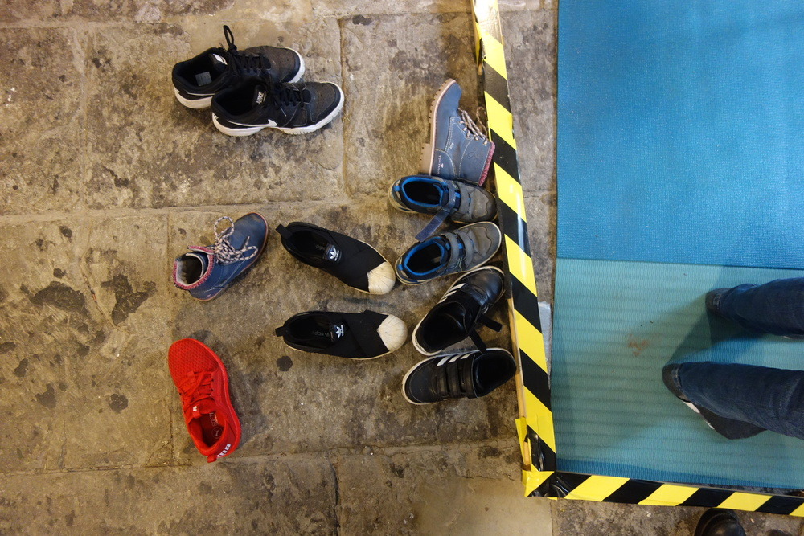

We have designed the Control Shift event to be decentralised with nodes of activity around the city, so the website (will….eventually) be a place where the central access point for the programme as a whole. I have included images of our micro event last year.
The visual identity is also distributed - the screen shots are tests for a workshop based identity we are coordinating which will develop the identity through discussion based on questions that the event is dealing with. We were planning to have a photoshoot / discussion / social with our network and some other networks in Bristol.
I have also included screen shots of the development - as a big part of developing this programme is creating a distributed framework - shared (not open) tools for working in - we decided to be practical and use google tools so that more people could access.
